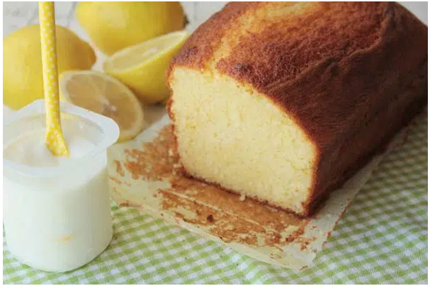
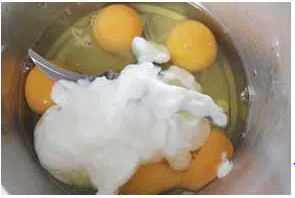
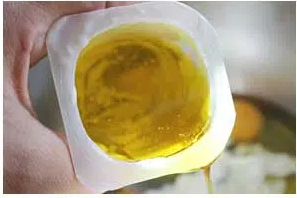
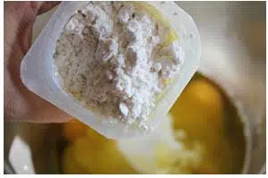
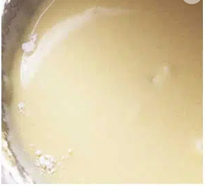
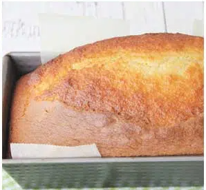

Budín de Yogur de limón
Esta receta de budín de yogur es muy sencilla ya que se utiliza el mismo "vasito de yogur" como medida para todos los ingredientes.

El motivo es que esta receta de budín de yogur 1,2,3 es muy, muy sencilla y fácil de recordar, ya que sólo tienes que acordarte del 1, 2, 3 con las medidas en el orden adecuado: 1 yogur de limón, 1 medida de aceite de girasol, 2 medidas de azúcar, 3 medidas de harina… Creo que lo que resulta muy fácil en este caso es que no tienes que estar pesando ni preguntándote a qué tipo de vaso se refiere la receta o a cuántos gramos son tal o cual ingrediente.
Ingredientes:
- 1 yogur de limón
- 2 medidas (con el vasito de yogur) de aceite de girasol
- 2 medidas(con el vasito de yogur) de azúcar
- 3 medidas (con el vasito de yogur) de harina
- 3 huevos
- 1 sobre (16g) de polvo de hornear
- Mantequilla o margarina para engrasar el molde
Cómo hacer bizcocho de yogur de limón
- Precalentamos el horno a 180ºC.
- Colocamos el yogur en un bol y utilizamos el vasito como medida.
- Mezclar con los huevos y el azúcar

- Agregar el aceite

- Batir y añadir el polvo de hornear con la harina tamizada.

- Utilizaremos la batidora eléctrica, batiendo después de cada adición de un nuevo ingrediente.
- La mezcla debe quedar ligera y emulsionada.

Horneamos el budín
- Cuando tengamos una masa homogénea y fina, volcamos sobre un molde, al que habremos untado de manteca y espolvoreado con harina para que luego resulte fácil desmoldarlo.
- Horneamos durante 30-35 minutos a 180ºC, o hasta que veamos que la punta de un cuchillo sale limpia al pinchar en el centro del budín.
- Desmoldamos y dejamos enfriar.

¡Ahora solo queda disfrutarlo !
hola
aqui
estamos etiqueta pre
- Index
- Página 1
- Página 2